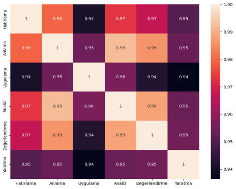
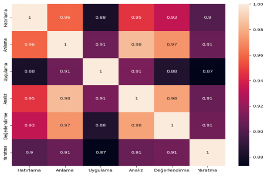
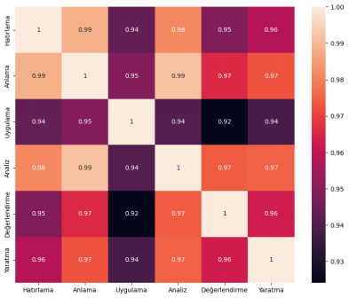
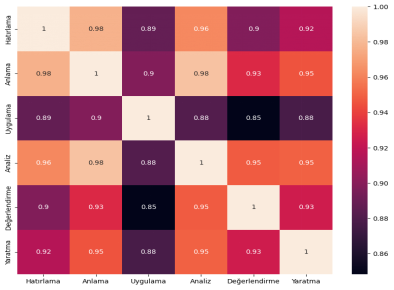
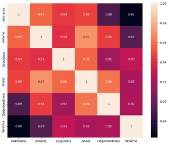

Türkçe soru-cevap oluşturmada Chat-GPT üretiminin Bloom Taksonomisine göre Sınıflandırma Performansı
Doğal Dil İşleme, derin öğrenme tabanlı ve transformer mimarisini temel alan Büyük Dil Modellerinin yükselişiyle birlikte, önceden eğitilmiş modellerin çeşitli alanlarda daha yaygın bir şekilde kullanılmasına olanak tanıyan bir alan haline gelmiştir. Bu büyük dil modellerinden biri olan GPT (Generative Pre-trained Transformer)’nin sohbet robotu olan ChatGPT ücretsiz kullanımı ile birlikte popüler hale gelmiştir. Bu çalışma, ChatGPT'nin metin üretme yeteneğini incelerken Bloom'un bilişsel alan taksonomisini referans alacaktır.
Bloom'un taksonomisi, bilişsel alanları hatırlama, anlama, uygulama, analiz, değerlendirme ve yaratma olmak üzere altı kategoriye ayırır. Bu doğrultuda, önceden belirlenmiş Bloom Taksonomisi açıklamalarına dayanarak ve özel yönergeler oluşturularak elde edilen ChatGPT metin üretimi, bu taksonomiye göre sınıflandırma çalışmaları ile değerlendirilmiştir.
Bu doğrultuda, metni temsil eden özellikleri içeren vektörleri Türkçe Bert modeli ile alınmıştır.
Elde edilen vektörler arasındaki benzerliği ölçmek için metinler arasındaki benzerliği ölçmede kosinüs ve öklid benzerliği hesaplanmıştır.
Her basamak ayrı olarak için seçilen referans cümlelerin ve üretilen metinlerin vektörleri karşılaştırma için kullanılmıştır. Referans cümlelerin ile üretilen metinlerin arasında ve üretilenlerin kendi arasındaki benzerlikler hesaplanmıştır. Bu sayede, ChatGPt üretimi metinlerin Bloom’un Taksonomisine uygunluğu ve sınıflandırmaya etkisi değerlendirmiş.
1956 Benjamin Bloom tarafından "eğitsel hedeflerin taksonomisi" olarak açıklanan [1] ve 2001 yılında revize edilerek güncellenen [2] (Anderson & Krathwohl) Yenilenmiş Bloom'un bilişsel alan taksonomisi (YBT), eğitimde soru hazırlama ve kazanım belirleme konularında rehberlik eden önemli bir ölçüt ve sınıflandırma aracı olmuştur. Yenilenmiş taksonomi, eleştirilere yanıt olarak geliştirilmiş ve öğretimdeki gelişmelere uyum sağlamıştır. Ancak, hedeflerin karmaşıklığı ve çeşitliliği, Bloom Taksonomisinde ifade edilmesini, sınıflandırılmasını, uygulanmasını ve değerlendirilmesini zorlaştırabilmektedir. [3].
Bloom'un taksonomisi, bilişsel süreçleri altı ana kategoriye ayırarak inceler: hatırlama, anlama, uygulama, analiz, değerlendirme ve yaratma. Bu kategorilere uygun soru ve kazanım oluşturmada ortak referans nokta fillerdir. Bu konuda ingilizce fiiler üzerinde Stanny tarafından yapılan çalışmada Bloom'un taksonomisinde kullanılan fiillerin Google aramasında en yüksek sıralamaya sahip 30 sitede yayınlanan listelerde mevcudiyetine göre basamaklarda fillerin bulunma sıklığı tablolaştırılmıştır. Aynı çalışmada, dilin esnekliği, aynı fiilin farklı bağlamlarda farklı düzeylerde ilişkilendirilmesi gibi nedenlerle Bloom'un sınıflandırma düzeyine göre düzenlenen fiillerin, öğrenme farklılıklarını ve akademik başarı düzeylerini ayırt etmede yetersiz kaldığı belirtilmiştir. [4]
Bloom Taksonomisi sınıflandırma çalışmaları genellikle eğitim bilimi literatüründe alana özgü veri kümeleri ve nitel yöntemlerle gerçekleştirilir. [5,6,7] Bu çalışmalar, öğrenme hedeflerini belirleme, öğretim materyallerini sınıflandırma ve öğrenme süreçlerini optimize etme amacı taşır. Aynı zamanda, otomatik soru sınıflandırma yöntemleri de Bloom Taksonomisi'ne odaklanarak soruların bilişsel düzeylerini sınıflandırmayı amaçlar. Ancak, bu çalışmalar genellikle tek bir alana odaklanır. [8] Konu çeşitliliği bakımından kapsayıcı bir Bloom Taksonomisi sınıflandırıcısı oluşturmak farklı uzmanların işbirliği ve diğer kaynak gereksinimlerini içerdiği için oldukça zorlu bir süreç olarak görülebilir.
Bloom’un Taksonomisine göre sınıflandırmada doğal dil işleme teknikleri ile kural, makine öğrenmesi ve derin öğrenme tabanlı yöntemlerin uygulandığı çeşitli çalışmalar bulunmaktadır.
Kural tabanlı olarak, soruların Bloom taksonomisinin revize edilmemiş versiyonuna göre sınıflandırma çalışmasının yapıldığı ve doğal dil işleme teknikleriyle ön işleme adımları kullanıldığı çalışmada, farklı bilişsel düzeylere örnek sorularla ilgili bilgi sağlanarak elde edilen sistemin etkinliğini değerlendirilmiştir. [9] Çalışma, Bloom taksonomisinin örtüşen fiil anahtar kelimelerini ele alarak kategori ağırlıklandırması sunan bir yaklaşımı benimsemektedir. Sistemin etkinliğini artırmak için kuralların geliştirilmesi ve daha fazla test yapılması ihtiyacını vurgulamıştır.
Makine öğrenimi yöntemleri kapsamında yapılan çalışmalara bakıldığında, Bloom'un Bilişsel Alan Taksonomisine dayalı soru sınıflandırma için farklı vektörleme ve sınıflandırıcılar kullanılan çalışmalar bulunmaktadır. Bu bağlamda, KNN (K-En Yakın Komşu), LR (Lojistik Regresyon) ve SVM (Destek Vektör Makineleri) sınıflandırıcıları ile gerçekleştirilen bir çalışmada, soruların Bloom taksonomisinin bilişsel alanına göre sınıflandırılması hedeflenmiştir.[8] TF-IDF (Terim Frekansı - Belge Frekansı Ters) ve Word2Vec gibi vektörleme yöntemleri, özellik mühendisliği teknikleri olarak kullanılmıştır. W2V-TFPOSIDF ve SVM yöntemleriyle bir veri kümesinde %0.83, diğer bir veri kümesinde ise %0.89 F1 skoru elde edilmiştir.
Naive Bayes sınıflandırıcının Bloom Taksonomisi Bilişsel Alanı'ndaki düzeylere göre sınav sorularını tahmin etme modeli olarak kullanılabilirliğinin ölçüldüğü çalışmada, veri kümesini 10 Katlı Çapraz Doğrulama ile farklı vektörleme yöntemlerinin performansını değerlendirilmiştir. 300 ara sınav ve final sınav sorusundan oluşan bu veri seti, TF-IDF yöntemi ile özellik çıkarımı sınıflandırma için kullanılmıştır. Yapılan değerlendirmeler neticesinde, N-Gram TF-IDF ile %85 Precision ve Words TF-IDF ile 82% Recall skoru elde ettiği belirtilmiştir. [10]
Derin öğrenme yöntemleri ile yapılan çalışmalara bakıldığında, Bloom'un Taksonomisine dayalı soru sınıflandırma için yapılan çeşitli çalışmalar bulunmaktadır. Bu bağlamda, LSTM ve önceden eğitilmiş kelime gömme kullanımı incelendiği çalışmada .Bloom'un taksonomisinin altı seviyesini temsil eden anahtar kelime/fiil sözlüğü kullanılmıştır. [11] Önceki çalışmalarda, Sukkur IBA ve Najran Üniversiteleri tarafından manuel olarak etiketlenmiş veri setlerini ve ön işleme adımları kullanılarak yapılan çalışmada, LSTM kullanılarak gerçekleştirilen CLOs (ders öğrenme çıktıları) sınıflandırması %74 ve soru sınıflandırması sonuçlarında ve %87 F1 skoru elde edilmiştir.
Yazılım mühendisliği dersine ait 844 sorunun Bloom Taksonomisine göre sınıflandırılması üzerine derin öğrenme tabanlı CNN ve LSTM kullanılan çalışmada, yapılan deneyler sonucunda önerilen CNN modelinin Bloom’un Taksonomisinin bilişsel boyutlarının tahmininde %80 doğruluk oranına ulaştığı görülmüştür. Bloom’un Taksonomisinin bilgi boyutları tahmininde ise LSTM modeli eğitim aşamasında daha başarılı olsa da, test aşamasında CNN modelinin daha yüksek bir doğruluk oranına sahip olduğu belirlenmiştir. [12]
Eğitim bilimlerinde, Bloom Taksonomisi kapsamında ChatGPT'nin etkinliğini değerlendiren bir dizi çalışma bulunmaktadır. McMaster Üniversitesi'nde gerçekleştirilen bir çalışma, Tıp öğrencilerinin değerlendirilmesinde ChatGPT etkisini incelemiştir. Karşılaştırmalı analizler, ChatGPT yanıtlarının genelde öğrenci yanıtlarından daha yüksek puan aldığını, ancak tarihi bir öğrenci kohortu ile karşılaştırıldığında performansının biraz düşük bulunduğunu ortaya koymuştur. [13]
Tıp alanında yapılan bir başka çalışma, 17 farklı uzmanlık alanından 33 doktorun katılımıyla gerçekleştirilmiş ve ChatGPT'nin tıbbi sorulara verdiği yanıtların doğruluğunu ve eksiksizliğini değerlendirmiştir. Sonuçlar, ChatGPT'nin çeşitli tıbbi sorulara genellikle doğru bilgiler sağladığını göstermiştir. [14]
ChatGPT'nin otomatik olarak ürettiği çoktan seçmeli soruların (ÇSS) bilimsel ve klinik kabul düzeyini değerlendiren bir çalışmada. uzmanlar tarafından üretilen ÇSS ile karşılaştırmalı sonuçlar, ChatGPT tarafından üretilen ÇSS'lerin, konu uzmanları tarafından oluşturulan ÇSS'lerle benzer kalite düzeylerine sahip olduğunu göstermektedir.[15]
Bir başka araştırmada, büyük dil modellerinin (LLM'ler) kontrol edilebilir metin üretimiyle (CTG) eğitimdeki potansiyel etkileri değerlendirilmiştir. Elde edilen sonuçlar, CTG'nin eğitimde etkili bir araç olabileceğini gösterirken, aynı zamanda çalışmanın sınırlamalarına da dikkat çekmiştir. [16]
Büyük dil modellerinin (LLM) performans değerlendirmesi yapılan bir başka makalede, LLM'lerin farklı alt alanlardaki bilgi yeteneklerini daha ayrıntılı değerlendirmek amacıyla LLMMaps adlı yeni bir görselleştirme tekniği önerilmiştir. Çalışmanın sonuçları, LLMMaps'in dil modellerinin güçlü ve zayıf yönlerini belirleme konusunda değerli bilgiler sağladığını göstermektedir. LLM'lerin performansı farklı bilgi alanlarında ve farklı Bloom seviyelerinde görselleştirilmiş, bu da örneğin ChatGPT'nin PubMedQA veri setindeki performansının farklı bilgi alanlarında değişiklik gösterdiğini göstermiştir. Ayrıca, LLM'lerin kendilerine atadığı zorluk derecesi ve yanıt süresi gibi faktörler de görselleştirilmiştir. LLMMaps'in kullanıcılar ve uzmanlar arasında değerlendirildiği iki değerlendirme çalışması, hem tıp araştırmacıları hem de dil modeli geliştiricileri ile yapılan mülakatlar içermektedir. SciQ veri setinde, her bir modelin performansı 997 soru üzerinden değerlendirilmiştir ve ChatGPT performansı % 92.68 olarak kaydedilmiştir. [17]
Büyük dil modelleri, geniş veri setleri üzerinde önceden eğitilerek dilin karmaşıklıklarını anlama ve çeşitli görevlerde kullanma yeteneğine sahiptir. Bu bağlamda, sohbet robotları gibi uygulamalarda GPT gibi büyük dil modelleri metin üretme görevlerinde başarılı bir şekilde kullanılmaktadır. Bu çalışma, özellikle ChatGPT'nin metin üretme yeteneğini değerlendirerek, Bloom'un bilişsel alan taksonomisi çerçevesinde bu üretimleri sınıflandırma performansını test etmeyi amaçlamaktadır.
Veri setinin oluşturulması
Öncelikle ChatGPT soru-cevap üretimi için Bloom’un taksonomisine üzerine yapılan çalışmalardan literatür taraması yapılarak yönerge (prompt) hazırlanmıştır. Performansın değerlendirmesi için uzmanlar tarafından hazırlanmış ve yayınlanmış kaynaklardan soru örnekleri alınarak, ChatGPT nin ürettiği sorularla karşılaştırılmıştır. Böylece uzmanlar tarafından hazırlanan soruların Bloom’un Taksonomisindeki basamaklara göre üretilen sorularla kıyaslanarak ChatGPT’ye verilen yönergelerde iyileştirmeler yapılmıştır. Sonuç olarak ChatGPT performansının uygun yönergeyle optimum seviyede uzman sorularına yakınlığı sağlanmaya çalışılmıştır.
Çalışmada karşılaştırma için öncelikle referans ve üretilen cümle örneklerinin vektörleri alınmıştır. Ardından bu vektörlerin referans ve üretilen karşılaştırılması yapılması için benzerlik metriklerinden yararlanılmıştır. Daha sonra üretilen sorular ve cevaplar kendi aralarında benzerliği ölçülmüştür. Sonuç olarak üretilen metinlerin Bloom’un Taksonomisinin basamaklarına uygunluğu ölçülmüştür.
…
1. ChatGPT için Yönerge oluşturma
Yenilenmiş Bloom Taksonomisine yönelik soru hazırlama ve soruların sınıflandırmasına yönelik çalışmalarda basamakların/boyutların tanımlaması Anderson, Krathwohl [2] çalışması referans alınarak yapılmaktadır. YBT’ye göre sınıflandırmada bir ortak referans nokta fillerdir. Yönergede sorularda kullanılacak fiillerin verilmesi soruların daha tutarlı olmasını sağlamıştır. Fiiler için referans olarak literatürdeki basamak açıklamalarının Türkçeleştirilmiş halinin sunuldulduğu kaynaklar ve Stanny’nin derlemesi referans alınmıştır. [4].
2. Kelime Temsil Yöntemi
Doğal Dil İşleme (NLP) bağlamında, bir cümlenin vektörü, cümlenin içerdiği kelimelerin sayısal temsilini ifade eden bir matematiksel vektördür. Bu vektör, genellikle metin gömme (embedding) teknikleri kullanılarak elde edilir. Kelime gömme, kelimelerin anlamsal benzerliklerini koruyacak şekilde vektör uzayına yerleştirilmesini sağlar. BERT (Bidirectional Encoder Representations from Transformers), doğal dil işleme alanında kullanılan transformers tabanlı bir derin öğrenme modelidir. [18] Bert modelleri, büyük bir metin verisi kümesi üzerinde ön eğitimle eğitilmiştir ve genel dil anlama yeteneklerini geliştirmek amacıyla tasarlanmıştır. BERTurk modeli, Türkçe dilindeki metinler üzerinde daha iyi performans göstermek üzere eğitilmiş ve özelleştirilmiş bir versiyonudur. BERTurk ile kelime temsilleri Bert modelinin iki yönlü bağlamsal analiz yapması ile anlamsal sonuçlar elde edilebilmektedir. Diğer kelime temsil yöntemlerine kıyasla daha başarılı sonuçlar elde ettiği çeşitli çalışmalar mevcuttur. [19, 20,21]
3. Benzerlik Metrikleri
İki metin arasındaki benzerliği ölçmek için metinlerin vektörleri, anlamsal özelliklerini sayısal bir şekilde temsil eder. Benzerlik metriği seçiminde ise kullanılan yöntem genellikle metin benzerliği probleminin özelliklerine ve gereksinimlerine bağlıdır. Geleneksel olarak metin benzerliği, vektör metnin mesafe uzunluğunu hesaplamak için metnin sayısal özelliklerini kullanan uzunluk mesafesi ölçülerek değerlendirilir. Bu yöntemin kullanıldığı en popüler metriklerden ikisi kosinüs ve öklid mesafeleridir. [22] Bu çalışmada bu iki metrik kullanılarak benzerlik ölçümü yapılmıştır.
3.1. Kosinüs Benzerliği
Kosinüs Benzerliği hesaplanırken vektör uzayında iki vektör arasındaki açıyı kullanarak benzerlik ölçülmektedir. Kosinüs Benzerliği formülü, vektörler arasındaki açıyı kullanarak benzerliği 0 ile 1 arasında bir değerle ifade eder. 1'e yaklaşan bir değer, vektörler arasındaki benzerliğin yüksek olduğunu gösterir. İki vektör arasındaki kosinüs benzerliği şu formülle hesaplanır:
cosine_similarity(A, B) = (A . B) / (||A|| * ||B||)
3.2. Öklid Benzerliği
Öklid benzerliği, vektör uzayında iki vektör arasındaki doğrudan uzaklığı ölçen bir metriktir. İki vektör arasındaki öklid mesafesi formülü, vektörlerin her bir bileşeni arasındaki farkın karesini alır, bunları toplar ve sonunda karekök alarak öklid benzerliğini elde eder. Öklid benzerliği 0'a yaklaştıkça, vektörler arasındaki benzerlik artar. Bu yöntem uzaklık değerlerini döndürür ve bu değerler 0'a yakın olur. Bu durumda, 1'den çıkartılarak elde edilen değerler, vektörler arasındaki benzerliği temsil eder. Yani, 1'e yaklaşan bir değer, vektörler arasındaki benzerliğin yüksek olduğunu gösterir. İki vektör arasındaki öklid benzerliği şu formülle hesaplanır:
euclidean_similarity(A, B)= 1- √ [∑i=1n(Ai−Bi)²]
ChatGpt soru-cevaplarının oluşturulması aynı konularda Bloom’un Taksonomisinin altı basamağından her birinde birer tane olmak 100 konudan 600 soru-cevap üretimi gerçekleştirilmiştir. Konu seçimi için Science Daily web sitesi haber kategorileri referans alınmıştır.
Referans olarak Bloom taksonomisinde örnek sorular incelediğinde ChatGpt üretimde olduğu gibi aynı konudan farklı basamaktan olmak üzere hazırlanmış veri olmasına dikkat edilmiştir. Bu bağlamda Drew [23] tarafından hazırlanan anlama basamağında 19 diğer basamaklarda 20 adet soru bulunan derleme kullanılmıştır.
Table 1. Referans Cümleler ile Chat GPT üretimi sorular arasında kosinüs benzerliği
Sorgu Cümlesi | Referans | ||||||
Hatırlama | Anlama | Uygulama | Analiz | Değerlendirme | Yaratma | ||
ChatGPT | Hatırlama | 0.973698 | 0.967431 | 0.958152 | 0.957968 | 0.950221 | 0.917614 |
Anlama | 0.961991 | 0.974433 | 0.960166 | 0.971797 | 0.960623 | 0.912806 | |
Uygulama | 0.930506 | 0.938385 | 0.938724 | 0.939541 | 0.922035 | 0.899502 | |
Analiz | 0.953640 | 0.965500 | 0.956125 | 0.971868 | 0.958080 | 0.909441 | |
Değerlendirme | 0.941350 | 0.961593 | 0.948926 | 0.969988 | 0.971578 | 0.914165 | |
Yaratma | 0.945237 | 0.954198 | 0.957032 | 0.952846 | 0.955183 | 0.971511 | |
Table 2. Referans Cümleler ile ChatGPT üretimlen cümleler arasında kosinüs benzerliği
Sorgu Cümlesi | Referans 'Hatırlama’ | Referans 'Anlama' | Referans 'Uygulama' | Referans 'Analiz' | Referans 'Değerlendirme' | Referans 'Yaratma' |
ChatGPT 'Hatırlama’ | 0.9473968 | 0.93486094 | 0.9163045 | 0.9159366 | 0.9004422 | 0.835227 |
ChatGPT 'Anlama' | 0.9239824 | 0.9488653 | 0.9203323 | 0.94359326 | 0.9212467 | 0.8256124 |
ChatGPT 'Uygulama' | 0.8610116 | 0.87677 | 0.87744814 | 0.87908286 | 0.84406996 | 0.7990041 |
ChatGPT 'Analiz' | 0.9072787 | 0.9309989 | 0.9122495 | 0.9437356 | 0.91615945 | 0.8188825 |
ChatGPT 'Değerlendirme' | 0.8826994 | 0.923185 | 0.89785194 | 0.9399755 | 0.943156 | 0.82833064 |
ChatGPT 'Yaratma' | 0.8904741 | 0.90839607 | 0.91406345 | 0.90569216 | 0.9103668 | 0.943021 |
Diğer taraftan ChatGpt tarafından üretimlen Soru ve Cevapların Basamaklara göre farklılıklar oluşturup oluşturmadığını görebilmek için farklı basamaklarda üretilen sour cevaplar kendi aralarında benzerlik incelenmiştir..
(Tabloları da ekle) hangisi daha iyi bakayım
2.1. Chat GPT üretimi Sorulara arasında kosinüs ve öklid benzerliği


2.2. Chat GPT üretimi Cevaplar arasında kosinüs ve öklid benzerliği


2. 3. Referans sorularının kendi arasında kosinüs ve öklid benzerliği

3. Machine Learning Algoritmaları ile sonuç
Önce ne yapmak istediğini anlat
makine ögrenmesi algoritmalarına giriş olarak neler veriliyor
Makine ögrenmesi algoritmaları parametreleri neler
Makine ögrenmesi algoritmaları materyal metod kısmında yukarda anlatılması gerek en az bir paragraf referasn vererek
Iki farklı sonuç var neden ne nedir
SML ve linear svm birini kullan yeterli KNN de ekleyebilirsin yerine hatta KNN ve SVM yeterli dieğerlerini çıkar
Basarım kriterleri nedir materyalde ekle
Sensitivity selectivity specificity gibi diğer lerini de ekleyelim
ML Sınıflandırıcı | Bloom ile Sınıflandırma | Konu Sınıflandırma |
SVM | 0.85 | 0.95 |
Linear SVM | 0.883 | 0.966 |
Random Forest | 0.76 | 0.93 |
Logistic Regression | 0.90 | 0.975 |
Sınıflandırma sonuçları nasıl degerlendiriyoruz
Kaynakça
[1] Bloom, B. S., M. D. Engelhart, E. J. Furst, W. H. Hill, and D. R. Krathwohl (1956), Taxonomy of educational objectives: The classification of educational goals. Handbook I: Cognitive domain. New York: David McKay Company
[2] Anderson, Lorin W., and David R. Krathwohl (2001), A taxonomy for learning, teaching, and assessing: A revision of Bloom's taxonomy of educational objectives, Allyn and Bacon.
[3] Bümen, N. T. (2006). Program geliştirmede bir dönüm noktası: Yenilenmiş Bloom Taksonomisi. Eğitim ve Bilim, 31(142), 3-14.
[4] Stanny, C.J. Reevaluating Bloom’s Taxonomy: What Measurable Verbs Can and Cannot Say about Student Learning. Educ. Sci. 2016, 64, 37. [CrossRef]
[5] Aktaş, E. (2017). Öğretmen adaylarının farklı metin türlerine yönelik soru sorma becerilerinin yenilenmiş Bloom taksonomisine göre değerlendirilmesi. Turkish Studies International Periodical for the Languages, Literature and History of Turkish or Turkic, 12(25), 99-118. http://dx.doi.org/10.7827/TurkishStudies.12274
[6] Eroğlu, D., & Kuzu, T. S. (2014). Türkçe ders kitaplarındaki dilbilgisi kazanımlarının ve sorularının yenilenmiş Bloom taksonomisine göre değerlendirilmesi. Başkent University Journal of Education, 1(1), 72-80.
[7] Sanca, M., Artun, H., Bakırcı , H., & Okur, M. (2021). Ortaokul Beceri Temelli Soruların Yeniden Yapılandırılmış Bloom Taksonomisine Göre Değerlendirilmesi. YYÜ Eğitim Fakültesi Dergisi, 18(1), 219-248. doi:10.33711/yyuefd.859585
[8] Mohammed, M., & Omar, N. (2020). Question classification based on Bloom’s taxonomy cognitive domain using modified TF-IDF and word2vec. PloS One, 15(3), e0230442. https://doi.org/10.1371/journal.pone.0230442
[9] Omar N, Haris SS, Hassan R, Arshad H, Rahmat M, Zainal NFA, et al. Automated Analysis of Exam Questions According to Bloom’s Taxonomy. Procedia—Soc Behav Sci. 2012;59: 297–303.
[10] A. Aninditya, M. A. Hasibuan, and E. Sutoyo, “Text Mining Approach Using TF-IDF and Naive Bayes for Classification of Exam Questions Based on Cognitive Level of Bloom’s Taxonomy,” in 2019 IEEE International Conference on Internet of Things and Intelligence System (IoTaIS), 2019, pp. 112–117.
[11] S. Shaikh, S. M. Daudpotta, and A. S. Imran. Bloom’s learning outcomes’ automatic classification using lstm and pretrained word embeddings. IEEE Access, 9:117887–117909, 2021.
[12] M. Laddha, V. Lokare, A. Kiwelekar, and L. Netak. Classifications of the summative assessment for revised bloom’s taxonomy by using deep learning. International Journal of Engineering Trends and Technology, 69:211–218, 03 2021.
[13] Morjaria, L.; Burns, L.; Bracken, K.; Ngo, Q.N.; Lee, M.; Levinson, A.J.; Smith, J.; Thompson, P.; Sibbald, M. Examining the Threat of ChatGPT to the Validity of Short Answer Assessments in an Undergraduate Medical Program. J. Med. Educ. Curric. Dev. 2023, 10, 23821205231204178. [Google Scholar] [CrossRef]
[14] Douglas Johnson, Rachel Goodman, J Patrinely, Cosby Stone, Eli Zimmerman, Rebecca Donald, Sam Chang, Sean Berkowitz, Avni Finn, Eiman Jahangir, et al. 2023. Assessing the accuracy and reliability of AI-generated medical responses: an evaluation of the Chat-GPT model. (2023).
[15] Y. S. Kıyak, A ChatGPT Prompt for Writing Case-Based Multiple-Choice Questions, REVISTA ESPAÑOLA DE EDUCACIÓN MÉDICA , vol.4, no.3, pp.98-103, 2023 https://doi.org/10.6018/edumed.587451
[16] Elkins, S.; Kochmar, E.; Cheung, J.C.; Serban, I. How Useful are Educational Questions Generated by Large Language Models? arXiv 2023, arXiv:2304.06638. [Google Scholar].
[17] Patrik Puchert, Poonam Poonam, Christian van Onzenoodt, and Timo Ropinski. 2023. Llmmaps– a visual metaphor for stratified evaluation of large language models. arXiv preprint arXiv:2304.00457.
[18] Devlin, J. et al.2019. BERT: Pre-training of Deep Bidirectional Transformers for Language Understanding. arXiv:1810.04805v2
[19] K. Tohma, H. I. Okur, Y. Kutlu and A. Sertbas, "Sentiment Analysis in Turkish Question Answering Systems: An Application of Human-Robot Interaction", IEEE Access, vol. 11, pp. 66522-66534, 2023.
[20] A. Ozcift, K. Akarsu, F. Yumuk, and C. Soylemez, "Advancing natural language processing (NLP) applications of morphologically rich languages with bidirectional encoder representations from transformers (BERT): an empirical case study for Turkish," Automatika, vol. 62, no. 2, pp. 226-238, Apr 2021.
[21] P. Savci and B. Das, “Comparison of pre-trained language models in terms of carbon emissions, time and accuracy in multi-label text classification using AutoML,” Heliyon, vol. 9, no. 5, p. e15670, 2023, doi: 10.1016/j.heliyon.2023.e15670.
[22] J. Wang and Y. Dong, “Measurement of text similarity: a survey,” Information, vol. 11, no. 9, p. 421, 2020.
- Drew, C. (April 24, 2023). 119 Bloom’s taxonomy examples. Helpful Professor. https://helpfulprofessor.com/blooms-taxonomy-examples/